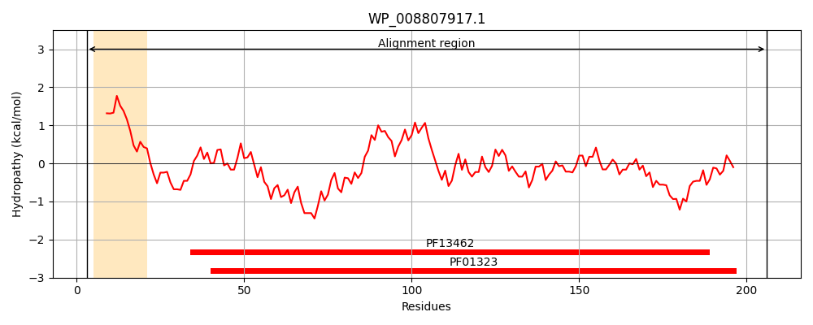
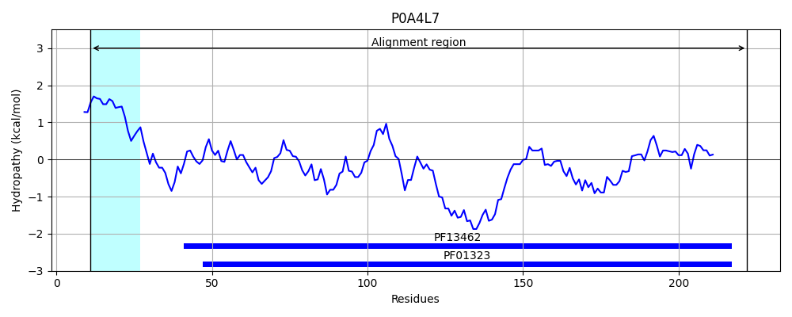
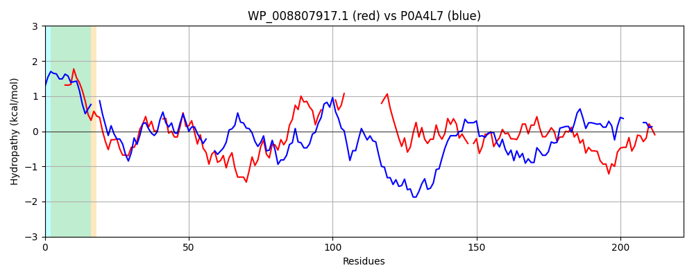

Hit Accession: P0A4L7
Hit TCID: 5.A.2.1.2
Hit Description: gnl|BL_ORD_ID|8585 gnl|TC-DB|P0A4L7|5.A.2.1.2 Thiol:disulfide interchange protein DsbL OS=Escherichia coli O6:H1 (strain CFT073 / ATCC 700928 / UPEC) GN=dsbL PE=1 SV=1
Mach Len: 222
e:0.000000
Query TMS Count : 1
Hit TMS Count: 1
TMS-Overlap Score: 0.750000
Predicted Substrates:CHEBI:10545;electron
BLAST Alignment:
Score: 179 , Bit scores: 73 bits, E-value: 3.5e-16, Alignment length: 222, Percentage identity: 27
Query: 3 KVWLALAGMILAFSASAAQITDGKQYITLDKPIAGEPQVL-EFFSFYCPHCYQFEEVLHVSDNVRQKLPEGTKMTKYHVEFLGPLGKDLTQAWAVAI----ALGV------------EDKITAPMFEAVQKTQTVQSVADIRKVFVDA-GVKGEDYDAAWNSFVVKSLVAQQEKAAADLQLQGVPAMYVNGKYQLNPQGMDTSNMDVFVAQYADTVKQLVEK 206
K L A + ++F+ASA T+G Y+ L+KPI + L + FS+ CP CY++++ V+ V +K+ + T +H+E G GK ++ +AV I A G+ + A + ++ + A K +DA G+ D++AA V+ + + + + ++QGVPA VNGKY + + + + + AD +++L K
Sbjct: 11 KTILLTAALAVSFTASA--FTEGTDYMVLEKPIPNADKTLIKVFSYACPFCYKYDKA--VTGPVSEKVKDIVAFTPFHLETKGEYGKQASEVFAVLINKDKAAGISLFDANSQFKKAKFAYYAAYHDKKERWSDGKDPAAFIKTGLDAAGMSQADFEAALKEPAVQETLEKWKASYDVAKIQGVPAYVVNGKYLIYTKSIKS------IDAMADLIRELASK 222 | Protein Hydropathy Plots: |
|---|
|  |  |
Pairwise Alignment-Hydropathy Plot:
|
|---|
|  |